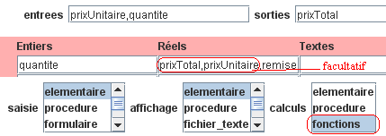

Fonctions
L'option de calcul "fonctions" de l'onglet Principal permet de créer
des fonctions déduites des variables indiquées dans les champs "entrées" et "sorties".

Après avoir complété l'onglet Principal (télécharger), cliquez
sur le bouton Nouveau et vérifiez
que le logiciel crée :
-
une fonction nommée "calculer_prixTotal" (à compléter)
avec deux paramètres (quantite, prixUnitaire).
-
un programme principal qui lit les deux paramètres (quantite et prixUnitaire), puis calcule
le prix total en appelant la fonction, puis affiche le prix total.
Si vous disposez déjà d'un programme Javascool sans sous-programme, vous pouvez éviter d'avoir
à compléter la fonction "calculer_prixTotal" :
-
Téléchargez si nécessaire le programme
Javascool (exemple).
-
Dans l'onglet "Principal", cliquez sur le bouton Reformuler.
La reformulation est déduite des informations de l'onglet Principal, en particulier
des entrées, des sorties et de l'option de calcul (ici "fonctions").
Remarque : en choisissant l'option de saisie "formulaire" avant de cliquer sur
le bouton "Reformuler", vous pouvez aussi créer un formulaire de saisie
(voir
résultat à tester en Javascool).